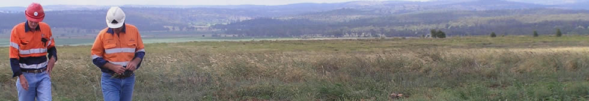

Services
Verterra's broad technical skills enable us to comprehensively tackle routine and novel issues dealing with soil, water and vegetation.
Our mixture of highly skilled and nationally certified environmental scientists, combined with highly experienced land, crop, irrigation and vegetation management practitioners, allows us to provide unparalleled innovation and capability in developing and implementing cutting-edge, end-to-end vegetation-based solutions for a wide range of industry sectors.
The combination of Verterra’s skills ensure reliable delivery of outcomes suited to your specific site conditions, expectations, operating constraints and compliance requirements.
Services Offered:
A -
B -
C -
D -
E -
F -
G -
H -
I -
J -
K -
L -
M -
N
O -
P -
Q -
R -
S -
T -
U -
V -
W -
X -
Y -
Z
- Advice in relation to Australian and international legislation and policy
- Air photo interpretation and spatial data management
- An annual audit of its GHG emissions, consistent with NGERS reporting requirements, will aim to achieve a declining intensity per employee over time. This report is made available to Verterra’s clients.
- Automated monitoring equipment installation
- Automated monitoring system design, installation and operation
- Benefit Cost ratio analysis for commercial projects with environmental co-benefits
- Bio-condition monitoring
- Biodiversity and landscape connectivity
- Biodiversity assessment
- Biodiversity offsets
- Biofuel resource inventory
- Biomass resource surveys
- Business case and discounted cash-flow and financial analysis
- Business case evaluation
- Carbon accounting practices compliant with accredited carbon trading schemes
- Carbon accounting practices compliant with accredited carbon trading schemes
- Carbon assessment
- Carbon liability and credit legislation
- Carbon sequestration
- Catchment modelling
- Chain of custody forms
- Chemical risk assessment, innovative application equipment, inventory control and use tracking.
- Clonal propagation
- Commercial project review
- Commercial timber and crop production
- Community and stakeholder engagement
- Compliance with Spatial Data Structure Standards
- Conventional and marker assisted selection
- Crop and grazing system
- Crop and natural resource protection
- Crop establishment
- Crop growth modelling
- Crop management and harvesting
- Crop nutrition and health monitoring
- Dam and site rehabilitation
- Design and project planning
- Detailed and Mapping Observation Soil Pit characterisation
- Detailed soil profile characterisation Work Instruction
- Development of processes and supporting documents for management of spatial data
- Development of spatial tools to improve efficiency of environmental and cultural heritage data capture and reporting functionality
- Due diligence of biomass and biofuel yield estimates
- Due diligence of bio-sequestration yield estimates
- Due diligence of bio-sequestration yield estimates
- Dust suppression
- Earthworks
- Economic evaluation
- Effluent and by-product water irrigation
- Electro-magnetic Survey Work Instruction
- EM Survey checklist
- EM Survey fundamental data set
- Environmental monitoring and compliance
- Environmental monitoring database management
- Environmental planning and regulatory approvals
- Equity share
- Erosion survey form
- Establishment and management of carbon sink plantings
- Establishment and management of carbon sink plantings
- Evaluation of land for compliance with Kyoto protocol and other regulatory requirements
- Evaluation of land for compliance with Kyoto protocol and other regulatory requirements
- Fencing
- Fire and risk management
- Fire management planning
- Fire planning and management
- Fire preparedness management
- Fire response training
- Flora and fauna benchmark and monitoring surveys
- Forest and plant biotechnology
- Forest inventory for carbon stock estimation
- Forest inventory for carbon stock estimation
- Forest management planning
- FullCAM modelling
- FullCAM modelling
- Genetic improvement of biofuel species
- Germplasm acquisition
- Government policy and environmental legislation review and analysis
- Grazing management and stock rotation planning
- Groundwater flow modelling
- Groundwater impact modelling
- Groundwater: Assessment of groundwater flow and solute transfer pathways
- Groundwater: Conceptual model development
- Groundwater: Groundwater monitoring equipment design, installation and data analysis
- Groundwater: Hydro-geological modelling
- Groundwater: Slug testing for permeability
- Groundwater: Stratigraphic analysis including porosity, permeability and inclination
- Growth modelling (empirical and process based)
- INFFER (investment framework for Environmental Resources) analysis
- Infrastructure protection
- Integrated grazing and timber production
- Interpretation and training in GIS methods
- Irrigated crop design, build and maintain
- Irrigated plantation design, build and maintain
- Irrigation and water delivery system installation
- Irrigation architecture analysis
- Irrigation modelling
- Irrigation system hydraulic design and specification
- Irrigation system installation
- Joint venture negotiation
- Koala offsets
- Land Assessment
- Land assessment quality control procedure
- Land purchase
- Land purchase and leasing
- Land rental
- Location of an inner city office to encourage use of public transport.
- Log harvesting and marketing
- Logging planning
- Machine based excavation for soil sampling
- Management planning
- Management systems for integrated agricultural, timber and carbon production with biodiversity benefits
- Management systems for integrated production of timber, carbon, agriculture and biodiversity outcomes
- Mapping and GIS
- Mapping Observation Pit Work Instruction
- Market analysis
- Monitoring
- Monitoring data analysis and reporting
- Monitoring planning
- Mulching
- Natural resource management planning
- Noxious weed management and control
- Nursery management
- Operation of a Rectification Action Plan (RAP) that identifies safety and environment issues that are tabled at weekly operations group meetings. The RAP plan identifies issues for corrective action and procedural improvement.
- Pasture biomass monitoring
- Pasture monitoring programs
- Peer review
- Pest and disease management planning
- Pest and disease treatment response
- Plant intellectual property management
- Plant nutrition
- Plant water use modelling
- Plant water use modelling
- Plantation and crop establishment
- Plantation crop and agricultural enterprise investment analysis
- Plantation harvesting
- Plantation inventory and assessment
- Plantation management systems for biofuel species
- Plantation management systems for biomass production
- Plantation project and contract management
- Printing in duplex where possible, recycling toner cartridges, boxes and paper, and switching off power sources when not in use.
- Project comparison and resource allocation for maximum returns from finite resources
- Project design for commercial returns with environmental co-benefits
- Project due diligence and auditing
- Project investment analysis
- Project management
- Property management planning
- Property management planning, design and specification
- Protected species legislation
- Pure species and hybrid tree breeding
- Regular reports to its Board of Directors, and annually to its small shareholder group.
- Regulatory issues management
- Research to optimise site rehabilitation options
- Revegetation
- Revegetation works
- Road and easement clearing
- Roading and extraction track planning
- Salt and leaching fraction modelling
- Salt tolerant species breeding and selection
- Significant tree relocation
- Silvicultural management
- Silviculture
- Site clearing
- Site preparation
- Site stabilization
- Site Surveying and Mapping
- Site-species matching
- Slashing
- Soil amelioration and management
- Soil and site assessment
- Soil corer based excavation for soil sampling
- Soil Lab Analysis
- Soil permeability monitoring
- Soil physical and chemical monitoring
- Soil pit form parameter codes
- Soil solute monitoring
- Soil surveying, mapping and land capability evaluation
- Soil, surface water, and groundwater water sample collection
- Soil-plant-water interaction modelling
- Spatial data collection, representation and provision of spatial data to clients
- Species adaptation and provenance variation
- Species for production of biodiesel
- Stakeholder engagement and inclusion
- Statistics & Quantitative Genetics
- Strategic evaluation of natural resource management options
- Substrate/regolith characterisation form
- Surface water, groundwater and irrigation supply water monitoring
- Surface Water: Discharge site analysis
- Surface Water: Hydrologic and catchment modelling
- Surface Water: Nutrient fate and pollutant export modelling
- Surface Water: Salinity and erosion risk analysis
- Surface Water: Surface water flow analysis
- Surface Water: Surface water monitoring equipment design, installation and data analysis
- Technology commercialisation (plant and biotechnology)
- Threatened vegetation community rehabilitation
- Timber felling
- Timber resource and inventory assessment
- Timber valuation
- Tool box meetings with staff where risks, issues and new initiatives are discussed and actioned.
- Training
- Tree growth monitoring for timber and carbon production
- Tree marking and harvesting management
- Trenching
- Trial design and analysis (especially imbalanced trial analysis)
- Vegetation and bio-condition monitoring
- Vegetation and biodiversity surveys
- Vegetation management
- Vegetation management
- Vegetation offsets
- Vegetation, biodiversity and koala offsets
- Water balance modelling
- Water balance monitoring
- Water chemistry evaluation and modelling
- Water treatment options and specification
- Weed control
- Weed management planning
- Wildfire response
- Yield regulation
Back To Top